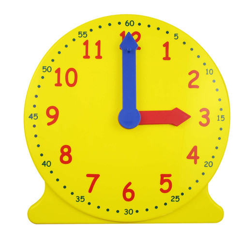

Geared Learner Clock
Arts and Crafts
R75Learning to read and understand time is a challenge to most learners. Start practising numbers, counting and time with an analogue clock-face.The movable colour-coded clock hands and numbers printed on the 12-hour clock face make it easy to read the hours and minutes.Hidden gears maintain the correct relationship between the blue minute hand and red hour hand.Durable geared plastic clock supplied with a removable stand which can be stored at the back of the clock.The red hour hand cannot be moved independently of the blue minute hand. Turn the knob at the back of the clock to move the hands manually.The clock face measures 10cm in diameter.Instructions are included.Age 4+.
Enquire about this productGeared Learner Clock at Kids Corner KZN
Geared Learner Clock is part of our Arts and Crafts collection. Kids Corner KZN stocks toys for learning, pretend play, creative play, gifting and everyday childhood discovery in South Africa.
Browse more Arts and Crafts toys